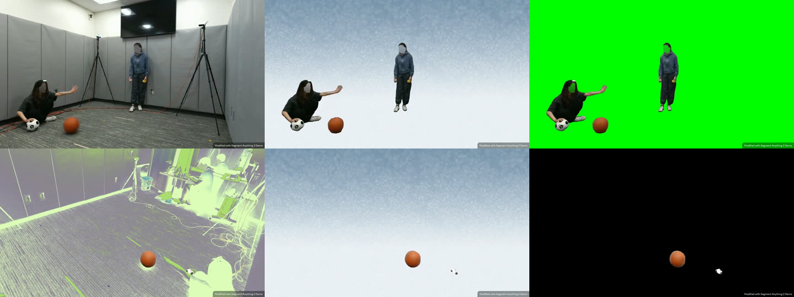
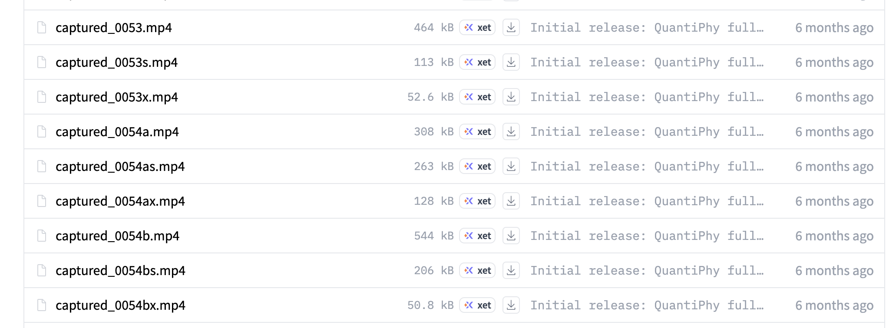
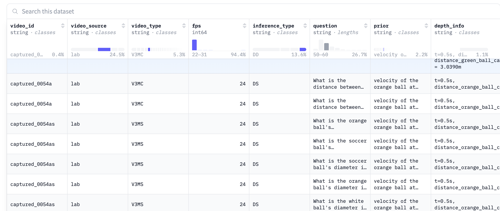

| 时间 | 交什么 | 谁要交 |
|---|---|---|
| 10 月 23 日 23:59 AoE 前 | 一个 CSV 预测文件：官方模板 quantiphy_submission_template.csv（已在 data/），3,289 行，每行一道题（不能用 video_id 当行标识）。id 不动，只填 parsed_value：纯数字、不带单位、按题目要求的单位，文件最大 2 MB。两个赛道用同一模板，每次上传时选择计入 Track A 或 B。 | 所有队伍 |
| 赛后通知起 14 天内 | 可复现包：代码或 Docker 容器，供官方复跑验证分数。 | 每赛道前三名 |
| 赛后 | 代码公开：Track A 仅前三名需公开；Track B 官网写的是所有参赛作品都要公开。 | 见左 |
| 11 月 | 技术报告 / 简短技术总结：官方邀请头部队伍提交。开发中用过闭源 API 输出的（比如用 Track A 结果辅助 Track B），必须在技术报告里说明。 | 受邀队伍 |
| 12 月 11–12 日 | NeurIPS workshop 口头报告：第一名 10 分钟，第二、三名 5 分钟。 | 每赛道前三名 |
data/ 里的模板是新版，或至少这 32 个 id 的单位按新版填写。parquet 的 question 列与新版模板一致。| 数据集 | 本地路径 | 大小 | 视频 | 场景（编号） | QA 数 | 每视频题数 | 有答案 |
|---|---|---|---|---|---|---|---|
测试集 PaulineLi/QuantiPhy | data/QuantiPhy/ | 507 MB | 568 | 408 | 3,289 | 1 到 19，中位数 5 | 否 |
验证集 PaulineLi/QuantiPhy-validation | data/QuantiPhy-validation/ | 6 MB | 24（在 validation_videos/ 下） | 24 | 159 | 3 到 13，中位数 6 | 是 |
clone 仓库后在仓库根目录运行自带脚本即可，只依赖 bash、curl 和 python3：
./download_data.sh脚本会把测试集、验证集和官方提交模板 quantiphy_submission_template.csv 下载到 data/ 目录，共约 515 MB。该目录已 gitignore。脚本可重复运行，已下载且大小正确的文件会自动跳过，结束时会校验文件数量和大小。
表格每行的 video_id 就是视频文件名（不含 .mp4）。一个 video_id 对应唯一一个视频；一个视频有多道题，所以同一 video_id（如 simulation_0082）会出现在多行，各行的 question 和 inference_type 不同。
测试集 parquet 有 8 列：video_id, video_source, video_type, fps, inference_type, question, prior, depth_info。验证集多一列 answer。
运行 download_data.sh 后，parquet 位于 QuantiPhy 仓库的 data/QuantiPhy/test_dataset.parquet（验证集为 data/QuantiPhy-validation/validation_dataset.parquet）。脚本不会生成 CSV，想直接打开看可在仓库根目录自行导出：
python3 -c "import pandas as pd; pd.read_parquet('data/QuantiPhy/test_dataset.parquet').to_csv('data/QuantiPhy/test_dataset.csv', index=False)"video_source | 说明 | 视频数（测试集） | 问题数 |
|---|---|---|---|
| simulation 仿真 | Blender 渲染（Sketchfab / BlenderKit 资产），物理参数完全可控 | 294 | 1,633 |
| lab 实验室 | 实拍的真实运动，场景中常有标尺或校准网格。视频 id 前缀为 captured_ | 115 | 806 |
| segmentation 分割 | 用 SAM 抠出运动前景、背景换成纯色的对照版本 | 85 | 430 |
| internet 互联网 | 野外真实视频，背景杂乱、光照变化、有遮挡 | 74 | 420 |
帧率以 24 fps 为主（420 个视频），其余有 22、25、26、30、33、50、60、120，共 9 种。1,000 道题指定了具体时刻（如 "at 1.5s"），抽帧时要用表格的 fps 列把时刻换算成帧号（与 pipeline/data.py 一致）。
只涉及平移运动学：尺寸 / 距离（长、宽、高、厚度、直径、间距、位移）、速度（瞬时、时段平均、水平）、加速度（瞬时、平均、重力，统一取 9.8 m/s²）。每个样本 = 1 个视频 + 1 个 prior + 1 个问题。测试集分布：
| 被问的物理量 | 题数 |
|---|---|
| 速度 | 903 |
| 长度 | 573 |
| 高度 | 554 |
| 距离 / 位移 | 430 |
| 宽度 | 397 |
| 直径 / 半径 | 255 |
| 加速度 | 150 |
| 厚度 | 5 |
| 其他（size、spacing、breadth 等） | 22 |
| 合计 | 3,289 |
| 答案单位 | 题数 |
|---|---|
| meters | 1,642 |
| m/s | 680 |
| cm | 593 |
| cm/s | 218 |
| m/s² | 135 |
| cm/s² | 15 |
| mm | 6 |
| 合计 | 3,289 |
| prior 关键词 | 题数 |
|---|---|
| speed | 817 |
| acceleration | 774 |
| diameter | 476 |
| gravity | 303 |
| length | 298 |
| velocity | 224 |
| height | 220 |
| width | 146 |
| radius | 5 |
| 其他（size、ruler calibre 等） | 26 |
| 合计 | 3,289 |
按关键词归类，每题只计一次：问题按 加速度 → 速度 → 距离 → 尺寸 的优先级匹配（含 velocoty 等拼写错误）；单位取问题中 “in <单位>” 的位置，不论在句中还是句尾；prior 按 gravity → acceleration → velocity → speed → 尺寸词 的优先级匹配。
有 47 道题的单位写在句中（如 "What is the height, in meters, of ..."）而非句尾，解析单位时不能只看结尾。验证集答案范围从 0.00175 到 1086，中位数 3.6。MRA 是相对误差，量级本身不影响评分，但答案为 0 或非数值会被判无效。
物体都由文字明确指定，从铅笔尖到航天器都有：
| 大类 | 细分类别 | 具体物理实体（Entities） | 在数据集中的主要角色 | 常见测算物理量 / 作用 |
|---|---|---|---|---|
| 交通与道路基础设施 | 机动/非机动车辆 | white car（白车）、black car（黑车）、bus（公交）、race car（赛车）、bicycle（自行车） | 目标物体 / 参照物 | 移动速度、运动距离、车辆长度 |
| 道路设施 | straight-through lane（直行车道）、roundabout lane（环岛）、center island planter（花坛） | 环境参照物 | 道路宽度、环岛半径、轨迹基准 | |
| 人物与特定角色 | 独立行人/路人 | pedestrian（行人）、woman in yellow（黄衣女子） | 目标物体 / 参照物 | 身高、行走速度、空间深度 |
| 多角色互动 | passer（传球者/左侧人）、receiver（接球者/右侧人） | 目标物体 | 人员间距、相对速度 | |
| 特殊场景角色 | astronaut（宇航员） | 目标物体 | 3D空间速度、加速度 | |
| 动物与空中实体 | 鸟类/自然生物 | big bird（大鸟）、small bird（小鸟）、eagle（老鹰） | 目标物体 | 翼展/体长、飞行速度、相对距离 |
| 飞行器 | spaceship（飞船）、drone（无人机） | 目标物体 | 3D运动轨迹、加速度 | |
| 体育器材与球类 | 台球运动 | billiard ball（台球，按颜色区分：红、黄、蓝、黑、紫、橙、白） | 目标物体 | 碰撞后速度、球体间距 |
| 保龄球运动 | bowling pin（保龄球瓶）、rolling sphere（滚动球体）、ball return opening（回球口） | 目标物体 / 参照物 | 保龄球瓶高度、球体直径、滚动速度 | |
| 物理教具与几何体 | 力学实验教具 | pendulum（单摆）、sliding block（滑块）、track cart（轨道小车）、wood block（木块） | 目标物体 | 摆动周期、滑行加速度、速度 |
| 标准几何体 | sphere（球体）、cube（立方体）、cylinder（圆柱体） | 目标物体 | 边长、直径、体积、运动速度 | |
| 工具与微观结构 | 工具与微观目标 | saw（锯子）、pencil tip（铅笔尖） | 目标物体 | 锯切频率、微观移动速度 |
| 环境与标定参照物 | 物理标定物 | ruler / calibrated grid（刻度尺 / 标定网格） | 尺度参照物 | 像素-物理尺寸换算基准（Scale Factor） |
| 室内环境参照 | floor tiles（地板砖）、ceiling light（吸顶灯） | 环境参照物 | 地砖边长、室内坐标系基准 | |
| 户外环境参照 | road sign（路牌）、neon sign（霓虹灯牌）、street light（路灯） | 环境参照物 | Z轴深度参考、相机移动校验 |
question 显式要求计算其物理量（如 length of eagle、velocity of white car）的主体。prior 或 depth_info 中给出已知尺寸/距离（如 ruler = 1cm、distance_neonsign = 34.5m），用于推算目标物体绝对数值的基准。同一个物体（如 white car）在场景 A 中作为测算目标（求其速度），在场景 B 中可作为参照物（已知其速度，求旁边行人的身高）。
参照物（车道、地砖、网格等）常作为 prior 的载体，也是指认难点（见"已知失败模式"）。
基于 test_dataset.parquet 与 validation_dataset.parquet 的统计（2026-10-04）。
captured_0034）代表一组场景设置，同编号下的每个视频是它的一个变体（换背景、分割掩码版等）。s：简化背景（32，captured_）x（30，captured_）或 _segmented（85，主要是 simulation_）：分割掩码版a / b：同一次实验的两个机位，只有 captured_0034、0035、0054，各自再有 s / x，共 6 个变体（见下方“变体示例”）编号 captured_0054 是同一次实验（滚动的橙色球和足球）的 6 个视频：两个机位（a / b），每个机位各有原始、简化背景（s）、分割掩码（x）三种背景。6 个视频共用同一个 prior（velocity of the orange ball at 0.5s = 2.21 m/s）和同一份 depth_info，video_type 第 4 位依次为 C / S / X。点击文件名可在 HuggingFace 打开。

| video_id | video_type | 题数 | 内容 |
|---|---|---|---|
captured_0054a | V3MC | 12 | 原始实拍，机位 A：广角，从侧面看两人传球 |
captured_0054as | V3MS | 12 | a 版抠出人和球，背景换成简化背景（去掉实验室） |
captured_0054ax | V3MX | 11 | a 版分割掩码：人和球保留，背景为纯绿色 |
captured_0054b | V3MC | 12 | 同一次实验，机位 B：从坐地者身后看球滚远；球保留原色，其余画面经 SAM 2 Demo 特效处理（偏绿、反色） |
captured_0054bs | V3MS | 12 | b 版抠出两个球，背景换成简化背景 |
captured_0054bx | V3MX | 12 | b 版分割掩码：只保留两个球，背景为纯黑 |
HuggingFace 上的文件列表与数据表（每个 video_id 对应多行题目）：


inference_type 两个字母分别表示 prior 与答案的类型：S = 静态量（长度、尺寸），D = 动态量（速度、加速度）。测试集：DS 1,684、SS 597、SD 560、DD 448。
video_type 是 36 种四位编码（如 S2MC、A3MC、V2MS）：
| 位 | 含义 | 测试集分布（题数） |
|---|---|---|
| 第 1 位 | prior 的类型：S 尺寸、V 速度、A 加速度 | S 1,167 / V 1,061 / A 1,061 |
| 第 2 位 | 维度：2 平面运动、3 有深度 | 2D 1,742 / 3D 1,547 |
| 第 3 位 | 物体数：S 单个、M 多个 | M 2,502 / S 787 |
| 第 4 位 | 背景：C 原始、S 简化、X 分割掩码 | C 1,548 / S 930 / X 811 |
下面两个验证集视频都是仿真渲染，prior 都是“人的身高”，可以直接对比。左边是 2D，右边是 3D。
simulation_0171Prior：height of the astronaut = 2.2 m
depth_info：无
相机从侧面平视，宇航员沿着画面左右跳跃，运动基本都在同一个平面里。整段视频中宇航员离相机的距离几乎不变，所以“1 像素等于多少米”在整个画面里是一个固定比例，用身高 2.2 m 标定一次即可。
| 类型 | 问题 | 答案 |
|---|---|---|
| SD | What is the speed of the astronaut at time 1s in m/s? | 4.89 |
| SD | What is the acceleration of the astronaut at time 2s in m/s^2? | 0.705 |
simulation_0015Prior：height of the person = 1.87 m
depth_info：
t=0s, distance_human_camera = 12.26 m
t=1s, distance_human_camera = 10.97 m
distance_the_pedestal_of_the_central_sculpture_and_camera = 9.460 m
distance_the_centeral_sculpture_camera = 9.460 m
distance_the_nearest_freestanding_art_display_panel = 11.874 m相机有透视，人朝着相机走来，1 秒内离相机从 12.26 m 变到 10.97 m，画面里越走越大。被问的雕塑、展板、长椅、屋顶各自离相机的距离都不一样，不能直接用人的像素身高去量它们，必须结合 depth_info 里的距离做透视换算。
| 类型 | 问题 | 答案 |
|---|---|---|
| SS | What is the height of the central sculpture itself (excluding the pedestal) in meters? | 1.97 |
| SS | What is the clear height from the floor to the underside of the open roof frame in meters? | 12.9 |
| 2D（video_type 第 2 位 = 2） | 3D（video_type 第 2 位 = 3） | |
|---|---|---|
| 相机与运动 | 侧视或俯视，物体在与画面平行的平面内运动 | 有透视，物体会靠近或远离相机，或者多个物体处在不同深度 |
| 像素到米的换算 | 全画面一个固定比例，用 prior 标定一次 | 比例随距离变化，近大远小，需要按每个物体、每个时刻的距离分别换算 |
depth_info 字段 | 全部为空（测试集 1,742 题） | 全部有值（测试集 1,547 题），给出某些时刻某些物体到相机的距离 |
| 评测类别 | S2 / D2 | S3 / D3 |
depth_info 是否为空。测试集中两者是一一对应的。video_source 拼成了 segmentaion，测试集是 segmentation，合并数据时要统一。captured_0041x.mp4 的文件名开头多了一个空格，download_data.sh 已自动处理。parsed_value 会被取绝对值，所以符号不影响得分。以下 5 个样例来自验证集，所以带有答案。每个视频配一个已知物理量（prior）和若干问题，类型标签含义见“题目类型与评测类别”。
internet_0027 互联网视频S2MC25 fpsPrior：billiard ball diameter = 57.2 mm
| 类型 | 问题 | 答案 |
|---|---|---|
| SS | What is the initial distance between the balck ball and the purple ball in cm? | 14.74 |
| SD | What is the white ball's average velocity in 1.00s to 2.00s in cm/s? | 26.82 |
| SD | What is the velocity of the orange ball at 1.00s in cm/s? | 24.99 |
| SS | What is the final distance between the purple ball and the black ball in cm? | 18.04 |
| SD | What is the acceleration of the yellow ballon the left at 2.00s in cm/s^2? | 11 |
internet_0001 互联网视频S2SC24 fpsPrior：lane width = 3.66 m
| 类型 | 问题 | 答案 |
|---|---|---|
| SS | What is the length of the black car in meters? | 5.81 |
| SS | What is the width of the black car in meters? | 2.21 |
| SD | What is the average speed of the black car in m/s? | 29.3 |
captured_0013 实验室拍摄A3MC24 fpsPrior：t=1.5, ball acceleration = 3.0 m/s^2
| 类型 | 问题 | 答案 |
|---|---|---|
| DS | What is the height of the cup in cm? | 14.5 |
| DS | What is the length of the pen in cm? | 14.5 |
| DS | What is the diameter of the cookie in cm? | 8 |
| DS | What is the width of the note book in cm? | 10.8 |
| DS | What is the width of the desk in cm? | 857.9 |
| DS | What is the length of the slope in cm? | 30.8 |
| DS | What is the diameter of the ball in cm? | 6.7 |
| DD | What is the velolicty of the ball at 1.5s in cm/s? | 102.65 |
simulation_0163 仿真渲染S2MC24 fpsPrior：diameter of the ball = 0.21 m
| 类型 | 问题 | 答案 |
|---|---|---|
| SD | What is the speed of the ball at time 0.5s in m/s? | 3.148 |
| SD | What is the acceleration of the ball at time 0.5s in m/s^2? | 0.359 |
| SD | What is the speed of the ball at time 1s in m/s? | 2.974 |
| SD | What is the acceleration of the ball at time 1s in m/s^2? | 0.339 |
| SS | What is the height of the bowling pin in meters? | 0.32 |
| SS | What is the height of the ball return opening in meters? | 10 |
simulation_0098_segmented 仿真 + 分割掩码V2MX24 fpsPrior：speed of the shark = 3 m/s
| 类型 | 问题 | 答案 |
|---|---|---|
| DD | What is the average speed of the boat in m/s? | 5 |
| DS | What is the length of the boat in meters? | 10 |
| DS | What is the length of the shark in meters? | 3.26 |
| DS | What is the height of the shark in meters? | 1.11 |
Mean Relative Accuracy。官方实现在 evaluator.py，用 evaluate.sh 启动。大致思路是对每个预测在一组相对误差阈值 θ 上判断是否命中，再对阈值取平均，最后按类别（S2、D2、S3、D3）汇总。
本地只能在验证集上算分，因为测试集没有答案。
核心想法：不让 VLM 直接"猜"数值，而是把每个场景重建成可度量的几何与运动，再用 prior 标定尺度，用物理公式把被问的量算出来。VLM 只负责理解问题和指认物体。代码在主仓库的 pipeline/ 目录，依赖 PyTorch、transformers、OpenCV，模型只用 Grounding DINO 和 SAM 2（均开源，Track B 可用），不需要任何 API key。
conda activate quantiphy
python -m pipeline.run --split val # 验证集，打印分类别 MRA
python -m pipeline.run --split val --debug # 另存带框的调试帧到 outputs/debug/
python -m pipeline.run --split test --out outputs/submission.csv # 填好官方模板完整案例演示：simulation_0300，从输入到答案逐阶段展示每个中间结果（检测候选、SAM 2 掩码视频、深度序列、三维轨迹、速度曲线、逐题得分）。
为什么合理。QuantiPhy 本质上是一个测量问题：所有题目都是"已知一个物理量，求另一个"，两者通过比例尺或运动学公式严格相关。端到端 VLM 对数值不敏感，官方 GPT-5.1 基线在验证集上只有 MRA 0.486，而且 6.3% 的答案无效。一个显式的"跟踪 + 标定 + 计算"流水线，只要测量误差能控制在 10% 以内，单题 MRA 就能接近 0.9。按场景而不是按视频处理也正确：568 个视频只有 408 个场景，117 个场景的 2 到 3 个变体问的是同一组问题，重建一次即可复用。
x 或 _segmented 后缀的变体本身就是分割掩码视频，等于官方免费给了 148 个视频的精确物体分割。同场景的原始背景版（C）和简化背景版（S）可以直接借用它的掩码和轨迹，不必再跑分割模型。左列是设计目标，右列是代码里目前做到的程度。
| 阶段 | 设计 | 当前实现 |
|---|---|---|
| 0 问题解析 | 每道题抽出：目标物理量、目标物体、时刻、答案单位、prior 的物体和数值。输出结构化 JSON。 | parse.py：规则解析器，覆盖全部 233 种 prior 写法，不调用 LLM。后续若换 LLM，Track A 可用 GPT / Claude，Track B 用 Qwen2.5-VL 或 Qwen3。 |
| 1 场景重建（每场景一次） | 抽帧；指认题目涉及的所有物体；分割并逐帧跟踪，得到每个物体每帧的 mask、bbox、中心轨迹。有分割变体的场景直接用掩码。 | perceive.py：Grounding DINO 在 6 个采样帧上找物体，取分数最高的框作为提示，SAM 2 向前向后传播掩码，轨迹用掩码质心；掩码视频直接用前景像素。轨迹缓存到 outputs/tracks/，单个视频约 10 秒。 |
| 2 尺度标定 | 2D：用 prior 物体的像素尺寸（或像素速度）得到比例尺 m/px。3D：用 prior 物体的像素尺寸和 depth_info 里的相机距离反推焦距 f，之后任意物体 真实尺寸 = 像素尺寸 × 距离 / f；速度的纵向分量用 depth_info 在不同时刻的差分。 | calibrate.py：按设计实现。物体视大小变化时按针孔关系 Z(t) = Z₀·h(t₀)/h(t) 生成逐帧深度并得到径向速度；用框的宽和高中变化较小的那个作为大小依据。实验室相机焦距若反推落在 450 到 950 px 之外，改用 650 px 先验。 |
| 3 物理拟合与计算 | 静态量：像素尺寸 × 比例尺。速度：轨迹平滑后一阶差分，或拟合匀速 / 匀加速模型后取导数。加速度：二阶，或直接取拟合参数。时刻按该视频 fps 精确定位到帧。prior 为重力加速度的 303 道题对抛体轨迹拟合抛物线反推比例尺。 | physics.py：Savitzky-Golay 平滑，局部二次拟合求速度和加速度，位移、平均速度、抛物线拟合重力。横向 = 像素偏移 × 深度，纵向 = 深度序列，再求导得到真实三维速度。solve.py：一道题到一个数。 |
| 4 校验与 agent 优化 | 三类一致性检查：同场景不同变体答案应一致；同物体多道题互相约束；物理合理性范围。失败时 agent 诊断原因并重试：换指认提示、换帧、换拟合模型、改用另一变体的掩码。仍失败则回退到 VLM 直接回答。 | verify.py：目前只有合理范围检查、同场景变体取中位数、兜底常数（避免空值和 0 被判无效）。agent 重试和 VLM 回退是下一步。 |
辅助文件：data.py 读取数据、场景与变体分组、解析 depth_info、按数据集 fps 把时刻换算成帧号；metrics.py 实现与官方 evaluator.py 完全一致的 MRA。
| 子集 | 题数 | 难度 | 原因 |
|---|---|---|---|
| simulation 2D | 1,039 | 低 | 渲染干净、相机固定、物体清晰，比例尺标定最可靠。先在这里把流水线跑通。 |
| lab 3D | 791 | 中 | 有 depth_info，背景可控，还有分割变体可借用。 |
| simulation 3D / segmentation | 594 / 430 | 中 | 同上，分割版本几乎零成本。 |
| internet 2D | 420 | 高 | 背景杂乱、可能有相机运动和透视，平面假设不一定成立。这部分可能要更多依赖 VLM 回退。 |
| macro MRA | S2 | D2 | S3 | D3 | 无效答案 | |
|---|---|---|---|---|---|---|
| 官方 GPT-5.1 基线 | 0.486 | 0.569 | 0.354 | 0.456 | 0.564 | 6.3% |
| 流水线 v0（Grounding DINO 逐帧检测） | 0.436 | 0.413 | 0.368 | 0.651 | 0.311 | 0% |
| 流水线 v1（SAM 2 跟踪 + 度量三维） | 0.514 | 0.463 | 0.341 | 0.707 | 0.545 | 0% |
v1 按视频来源：分割掩码视频 0.87，实验室 0.62，仿真 0.46，互联网 0.35。v0 到 v1 的提升来自三处：
加速度 prior 场景从 0.27 提到 0.52，实验室视频从 0.38 提到 0.62。
captured_0013 的小球沿斜坡滚向相机，但 depth_info 没有小球的距离，像素加速度混入透视效应，整场 0.40。下一步：用场景中其他有深度的静态物体（斜坡远端、近端）约束小球的深度范围。